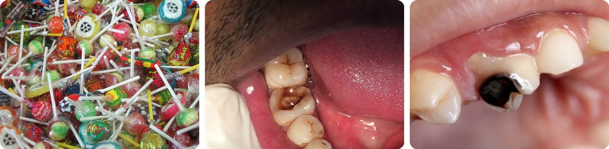
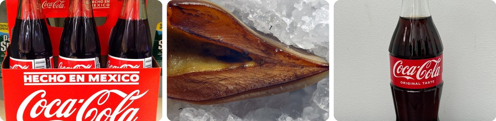
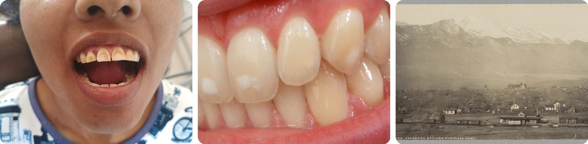
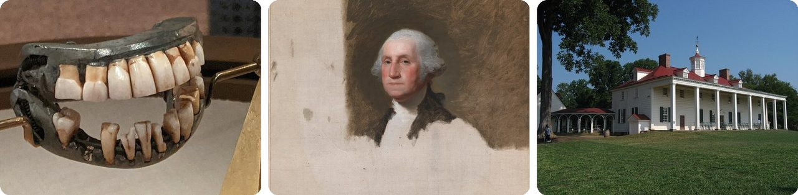
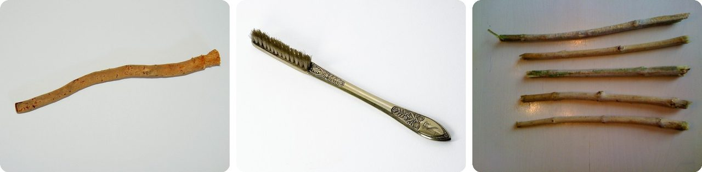

🌍 Top 10 Tooth Structure, Cavities and Dental Oddities
Nov 17, 2026
1. 💎 Tooth enamel is the hardest thing in your body
 The shiny white outer layer of a tooth is enamel, and it's harder than any bone you have. It's 96% mineral, mostly a crystal made of calcium and phosphate, and it's no more than 2.5 mm thick, about as thick as two dimes stacked.
The shiny white outer layer of a tooth is enamel, and it's harder than any bone you have. It's 96% mineral, mostly a crystal made of calcium and phosphate, and it's no more than 2.5 mm thick, about as thick as two dimes stacked.
But it's also brittle, and it has a big weakness: it's not alive. The cells that build enamel break down before the tooth even comes through the gum.
So enamel has no nerves, no blood and no way to grow back. Your mouth can repair tiny early damage, but once a real hole forms, neither your body nor a dentist can regrow it. A filling just plugs the gap.
It's armor that can never be repaired, only patched.
2. 🧊 Under the enamel, your teeth are full of tiny tubes
 Below the enamel is dentin, a yellowish layer that's softer and gives the tooth its color. It's packed with microscopic tunnels called dentinal tubules. Near the center there are 59,000 to 76,000 of them in a single square millimeter, a spot about the size of a pencil tip.
Below the enamel is dentin, a yellowish layer that's softer and gives the tooth its color. It's packed with microscopic tunnels called dentinal tubules. Near the center there are 59,000 to 76,000 of them in a single square millimeter, a spot about the size of a pencil tip.
Each tube holds a thin arm of a living cell and a bit of fluid. When the enamel wears away and those tubes are exposed, the leading idea is this: something cold makes the fluid shift → the shift sets off the nerve → you feel that sharp "zing."
And unlike enamel, dentin keeps growing slowly your whole life.
Think of it as a sponge full of tiny straws that all lead to a nerve.
3. 🔴 Every tooth has a living core that shrinks as you age
 In the center of each tooth is the pulp: soft tissue with nerves and blood vessels. It runs from a chamber in the crown down narrow canals inside the roots.
In the center of each tooth is the pulp: soft tissue with nerves and blood vessels. It runs from a chamber in the crown down narrow canals inside the roots.
The pulp in one adult tooth is only about 0.02 cubic centimeters, less than half a drop of water. Its outer cells are the ones that keep laying down new dentin.
Because that new dentin builds up on the inside, the pulp chamber gets smaller as you get older. If decay reaches the pulp, a dentist may need to do a root canal, which means cleaning the pulp out.
In other words, a tooth is a hard shell around a tiny, living center.
4. 🍬 Sugar doesn't rot teeth, the bacteria eating it do

A cavity needs four things: a tooth, the right bacteria, sugar and time. The main troublemaker is a germ called Streptococcus mutans that lives in the sticky film on your teeth, called plaque.When you eat sugar, these bacteria eat it too, and they turn it into lactic acid. Once the plaque drops below a pH of 5.5 (a little less sour than black coffee), the enamel starts to dissolve. They also turn table sugar into a sticky glue that helps them hang on to the tooth.
That's why how often you snack matters: after each sugary snack, the plaque turns acidic fast. In 2016, about 3.6 billion people, nearly half the world, had cavities in their adult teeth.
Basically, you share every candy with germs, and their leftovers are acid.
5. 🪨 Tartar is hardened plaque full of fossilized bacteria
 If plaque sits on your teeth long enough, minerals from your saliva soak into it and harden it into tartar, also called dental calculus.
If plaque sits on your teeth long enough, minerals from your saliva soak into it and harden it into tartar, also called dental calculus.
Hardening kills the bacteria inside, but it leaves a rough surface where new plaque grabs on even faster → more layers build up → it irritates the gums and can make them swollen and pull back. Once it's hard, a toothbrush can't remove it. A dental hygienist has to scrape it off.
Scientists compare it to concrete, with the dead bacteria as the gravel. It's so packed that one milligram, a crumb smaller than a grain of rice, holds about 200 million cells. Tartar found at archaeological digs even holds DNA and bits of food, showing what people ate long ago.
It's a diary of your meals, written in stone on your teeth.
6. 🥤 Soda and juice can wear teeth away with no germs at all

Cavities come from germs, but acid erosion doesn't. It's acid from food and drink dissolving the enamel directly. It's the most common long-term condition in kids aged 5 to 17.Drinks below a pH of about 5.0 to 5.7 can do it. In cola, the bubbles aren't the problem. The citric and phosphoric acids added for flavor are. Fruit juices are sneaky too: they resist your saliva's efforts to cancel out acid more than other drinks tested.
How often matters more than how much. Sipping a sour drink again and again keeps dipping your teeth back into acid.
It's like your teeth slowly melting in a light acid bath.
7. 🇺🇸 Brown-stained teeth in Colorado led to fluoride

In the early 1900s, a dentist named Frederick McKay noticed that many people in Colorado had blotchy brown teeth, known as the "Colorado brown stain." The weird part: those stained teeth hardly ever had cavities.McKay spent 30 years on the mystery. In 1931 a chemist tested water from towns where the stain was common and found the answer: natural fluoride in the drinking water.
Scientists then learned that a small amount, about 1 milligram per liter, prevents cavities, with only faint marks at most instead of brown stains. On January 25, 1945, Grand Rapids, Michigan, became the first city to add fluoride to its water on purpose, and by 1950 the results showed far fewer cavities.
Basically, a stain mystery turned into tap water that fights cavities.
8. 👶 Your adult teeth hide inside your jaw while you use your baby teeth
 Kids have 20 baby teeth. Their buds start forming before birth, when the baby is just 8 weeks into growing, and they usually start poking through around 6 months old.
Kids have 20 baby teeth. Their buds start forming before birth, when the baby is just 8 weeks into growing, and they usually start poking through around 6 months old.
Meanwhile the adult teeth grow in the jawbone underneath. As each one moves up, it presses on the baby tooth's roots → special cells dissolve those roots → the baby tooth wobbles and falls out. This usually happens between ages 6 and 12.
In Turkey and Greece, kids throw a lost tooth onto the roof and make a wish. In India, Korea and Vietnam, kids may toss it on the roof and ask for a mouse's tooth in return, because mouse teeth never stop growing.
Think of it as a second set of teeth waiting in line for their turn.
9. 🇺🇸 George Washington's false teeth were never wood

On April 30, 1789, when George Washington became the first US president, he had just one tooth of his own left. He had at least four sets of dentures in his life.Many people think they were wooden, but they had no wood. They were made from hippopotamus ivory, brass, gold, animal teeth and human teeth. Springs pushed the top and bottom apart, and bolts held them together.
He blamed his tooth loss on cracking walnuts with his teeth. Records also show he paid enslaved people at Mount Vernon for nine teeth in 1784; historians still argue over whether those teeth were meant for him.
His smile was more toolbox than tooth.
10. 🪥 Before toothbrushes, people chewed on sticks

The toothbrush's ancestor was the chew stick: a twig with a frayed end you rubbed on your teeth. The oldest ones go back to about 3500 BC in Sumer, in today's Iraq. Many people still use them, like the miswak in the Muslim world.The first bristle toothbrush like ours came from China during the Tang dynasty (619–907). It had hog bristles tied to a handle of bamboo or bone. The hogs came from cold places like Siberia, because the cold made their bristles firmer.
Europeans picked up the idea in the 1600s but found hog bristles too harsh, so many used softer horsehair. Nylon bristles only arrived in 1938.
In other words, your toothbrush is a fancy version of a chewed-up twig.
Fun fact
Britain's first mass-produced toothbrush is believed to have been dreamed up in jail. In 1770, William Addis was locked up for causing a riot and decided rubbing his teeth with a rag, soot and salt wasn't good enough. He saved a small bone from a meal, drilled holes in it and glued in bristles he got from a guard; after his release, he started a toothbrush business that made him rich, and his family ran it until 1996. Which makes you wonder what other everyday inventions were first thought up behind bars.
Photo credits (Wikimedia Commons)
- #1: Molar cut up during extraction - 2018-08-29 - Andy Mabbett -.jpg by Andy Mabbett, CC BY-SA 4.0
- #1: Lower wisdom tooth.jpg by No machine-readable author provided. Gleam~commonswiki assumed (based on copyright claims)., CC BY-SA 3.0
- #1: Young girl smiling with teeth in sunshine.jpg by Basile Morin, CC BY-SA 4.0
- #2: Dentinal tubules.jpg by Pinkmanggis, CC BY-SA 4.0
- #2: Dentinal tubules. Transverse ground section (rawpixel) by thegetty, CC0
- #2: Odontoblasts, showing Tomes's fibers entering (rawpixel) by thegetty, CC0
- #3: Dental X-Ray (flickr) by schoschie, CC BY 2.0
- #3: Pulp tissue removed during endodontic therapy by a size 20 broach file.jpg by DRosenbach at en.Wikipedia, Public domain
- #3: Electric pulp tester unit.jpg by Coronation Dental Specialty Group, CC BY-SA 3.0
- #4: Various candy and lollipops, 2007.jpg by Nick Carter, CC BY 2.0
- #4: Dental Caries Lower Right First Molar.jpg by Dr. Yogesh, CC BY-SA 4.0
- #4: Dental Caries Cavity 2 (cropped).JPG by Suyash.dwivedi, CC BY-SA 4.0
- #5: Dental Calculus.jpg by JonathanPulse, CC0
- #5: Sarro.jpg by Roquex, CC0
- #5: MandibularAnteriorCalculus.JPG by DRosenbach at English Wikipedia, Public domain
- #6: Mexican Coca Cola.jpg by Mike Mozart, CC BY 2.0
- #6: Молочный зуб любителя кока-колы.jpg by Anastasialogunov, CC BY 4.0
- #6: Coca-Cola glass bottle.jpg by Oleg Yunakov, CC BY-SA 4.0
- #7: Dental Flurosis (teeth with brown stains).jpg by Nizil Shah, CC BY-SA 4.0
- #7: Dental fluorosis (mild).png by Matthew Ferguson 57, CC BY-SA 4.0
- #7: Gezicht op Colorado Springs en het spoorwegstation met op de achtergrond de Pikes Peak Colorado Springs and Pikes Peak (titel op object), RP-F-2012-96-220.jpg by Rijksmuseum, CC0
- #8: Pano8.png by Roquex, CC0
- #8: Smiling young girl with deciduous teeth.jpg by Basile Morin, CC BY-SA 4.0
- #8: Deciduous teeths.jpg by Sebastian Wallroth, Public domain
- #9: Washington Teeth.jpg by BakedintheHole, CC BY-SA 4.0
- #9: Gilbert Stuart - George Washington (The Athenaeum Portrait) - Google Art Project.jpg by Gilbert Stuart, Public domain
- #9: West Face of Mansion, Mount Vernon, Near Alexandria, Virginia (2731038734).jpg by Ken Lund from Reno, Nevada, USA, CC BY-SA 2.0
- #10: Miswak 2014.jpg by محمد الفلسطيني, CC BY-SA 3.0
- #10: Napoleon Bonaparte's Toothbrush Wellcome L0043828.jpg by unknown, CC BY 4.0
- #10: Miswak003.jpg by Middayexpress, CC BY-SA 3.0


.JPG){kind=link}


.jpg){kind=link}
.png){kind=link}
,_RP-F-2012-96-220.jpg){kind=link}


_-_Google_Art_Project.jpg){kind=link}
.jpg){kind=link}